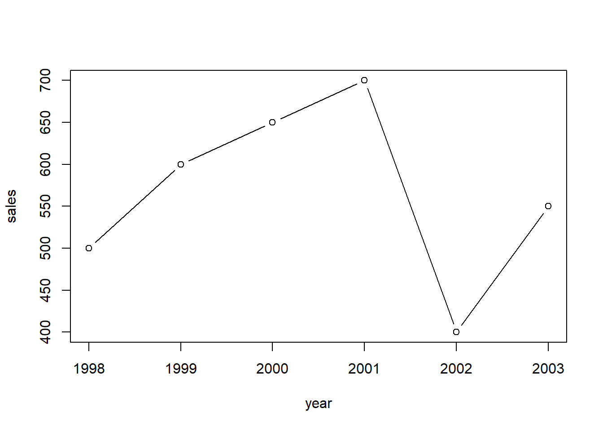
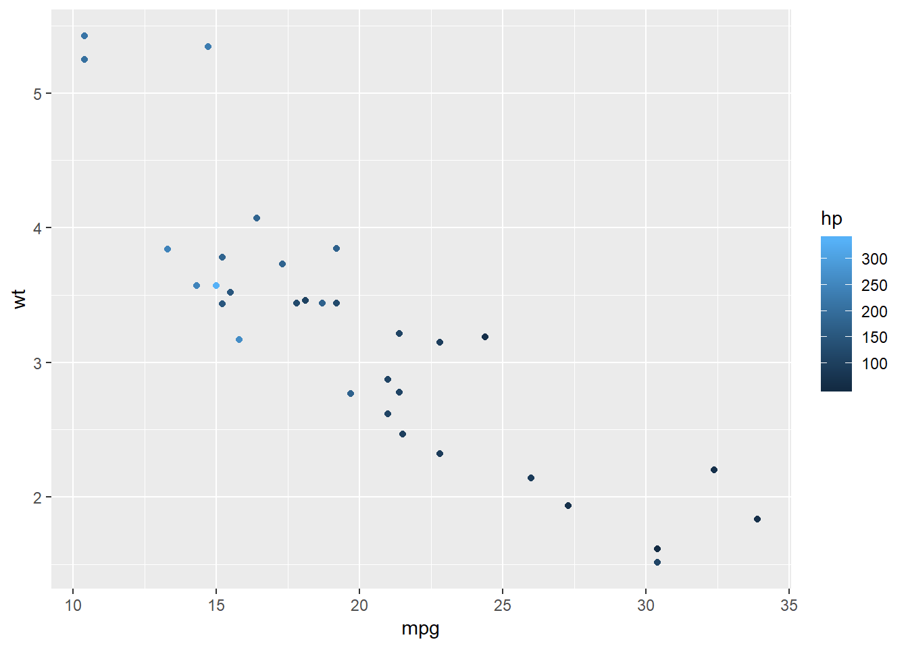
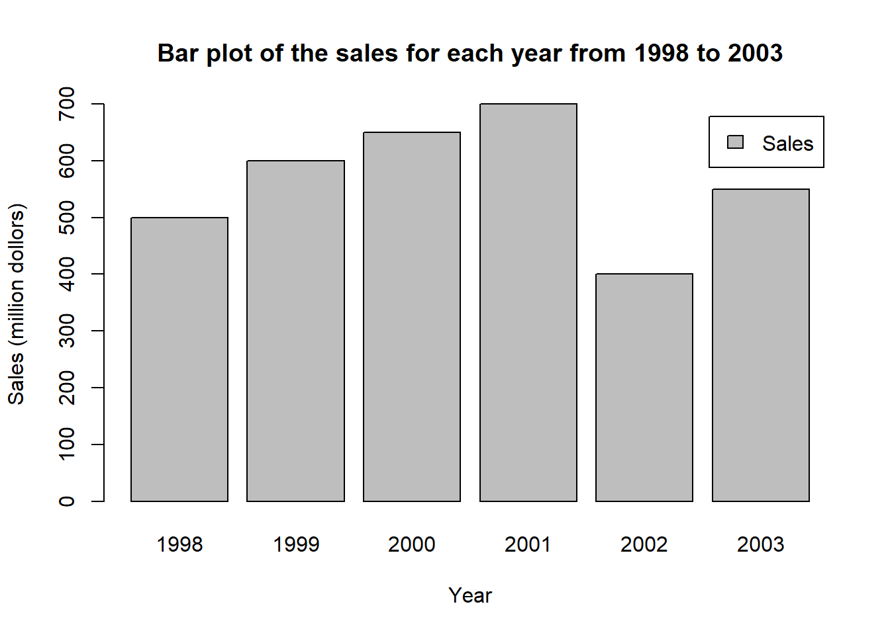
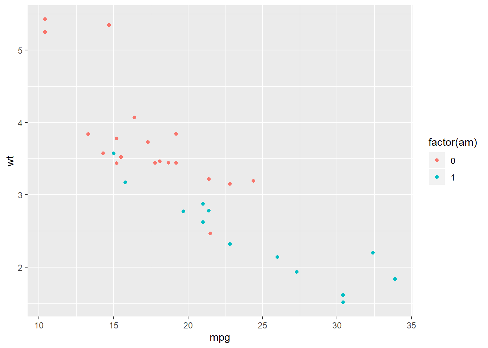
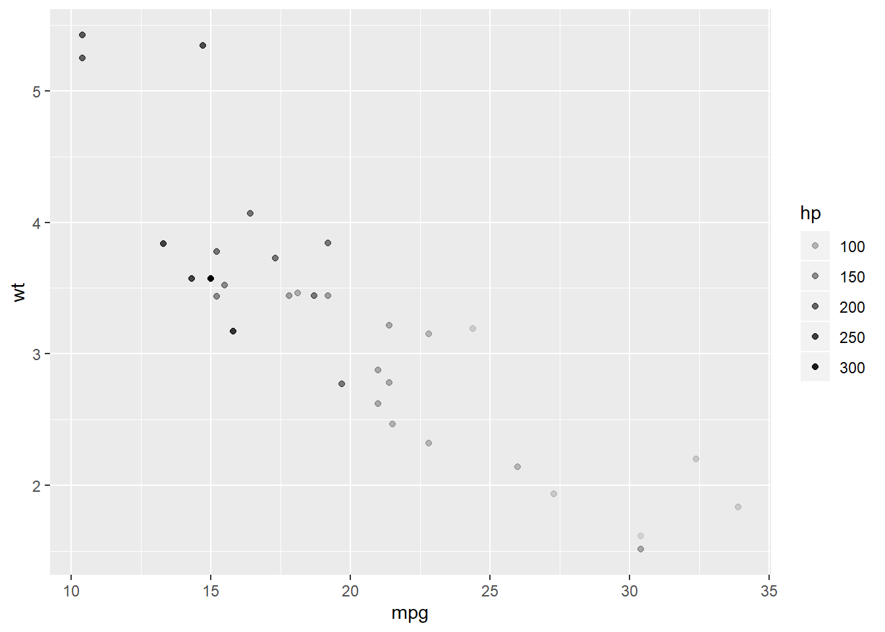

Chapter 5 Data Visualization with ggplot2
5.1 plot with base functions
We would focus on the base plotting functions in R first and then switch to the ggplot2 part.
5.1.1 Scater plot
year <- c(1998:2003) # create variable year
sales <- c(500, 600, 650, 700, 400, 550) # create variable sales
df <- data.frame(year, sales) # combine the varibles into one data frame called df
plot(df)
Or, you could use the variable names directly and indicate the dataset as the codes below. You will get the same result.

5.1.2 Line plot
You could transfer the scatter plot above to a line plot by just adding a type variable to indicate that you are plotting a line.
You could also choose another type by changing the value of type, as the one below.

5.1.3 Bar plot
barplot(df$sales,
names.arg = df$year) # names.org indicates the vector of names to be plotted under each bar
5.1.4 Add more elements in the plots
For a reader-friendly plots, you have to add more information such as titile, labels, and legend. For the plot above, we could use the codes below to make it more informative.
barplot(df$sales,
names.arg = df$year,
main = 'Bar plot of the sales for each year from 1998 to 2003', # add title for the plot
xlab = 'Year', # add label tag for the x-axis
ylab = 'Sales (million dollors)', # add label for the y-axis
legend = 'Sales') # add lengend name
5.2 Grammer of Graphics (gg)
We have crammar for languages. We also have grammars for graphcis. That’s where gg of ggplot2 comes from. For ggplot2, it has seven grammatical elements listed in the table below.
| Element | Description |
|---|---|
| Data | The dataset being plotted. |
| Aesthetics | The scales onto which we map our data. |
| Geometries | The visual elements used for our data. |
| Facets | Plotting small multiples. |
| Statistics | Representations of our data to aid understanding. |
| Coordinates | The space on which the data will be plotted. |
| Themes | All non-dataink. |
Let’s take the codes below as a simple example to show how those different elements work in ggplots. From this example, we might have a general idea what is each element and how does it work. If you are still confused, don’t worry about it. We will talk about each element in details latter.
library(ggplot2)
data(mtcars)
ggplot(mtcars, # Data
aes(x = mpg, y = wt)) + # Aesthetics
geom_point() + # Geometries
facet_grid(. ~ gear) + # Facets
stat_smooth(method = "lm", se = FALSE, col = "blue") + # Statistics
scale_x_continuous('Miles/(US) gallon',
limits = c(0, 40)) +
scale_y_continuous('Weight (1000 lbs)',
limits = c(0, 7)) + # Coordinates
theme_bw() # Themes
5.3 Data, Aesthetics, and Geometries
Generally, if you want to draw figures with ggplot2, you need at least three elements, which are data, aesthetics, and geometries. Data is the dataset we want to visualize. Aesthetic specifies the variables and related attributes. GEometry indicates the plot type and related attributes. Take the example above again. We want to visualize the varialbes of mpg and wp (aesthetic) of the dataset mtcars (data) with a scatter plot (geometry).

We could add attributes in the aesthetic element. For example, we could use color to indicate the value of hp by adding col = hp.
Here, hp is a continous variable, so ggplot2 uses the darkness of the color to indicate the value. However, if we use a categorical varibable (e.g. binomial variable), ggplot2 will use different colors to show different types.
ggplot(mtcars, # Data
aes(x = mpg, y = wt, col = factor(am))) + # Aesthetics
geom_point() # Geometries
Here, am stands for the types of transmission system (0 = automatic, 1 = manual). We use factor() to transfer this variable to a categorical one. Then, the ggplot2 uses one color for automatic transmission and another color for mannual transmission.
Besides color, there are other parameters to show different aspects of the plots.
| Parameter | Description | Continuous variable | Categorical variable |
|---|---|---|---|
| x | X axis position | ✓ | |
| y | y axis position | ✓ | |
| size | Diameter of points, thickness of lines | ✓ | |
| alpha | Transparency | ✓ | ✓ |
| color | Color of dots, outlines of other shapes | ✓ | ✓ |
| fill | Fill colour | ✓ | ✓ |
| labels | Text on a plot or axes | ✓ | |
| shape | Shape of point | ✓ | |
| linetype | Line dash pa!ern | ✓ |
As for geometries, there are many different types ot them you can use for different plots. For examples, geom_point() for scatter plot, geom_bar for bar plot, geom_histogram for histogram, geom_boxplot for boxplot, etc. Most functions of geometries are self-explained, so you could tell what their usages easily. We all talk about those commonly used geometries such as sactter plot, bar plot, line plot, etc. in the following parts.
5.4 Scatter plot

5.6 line plot

Reference